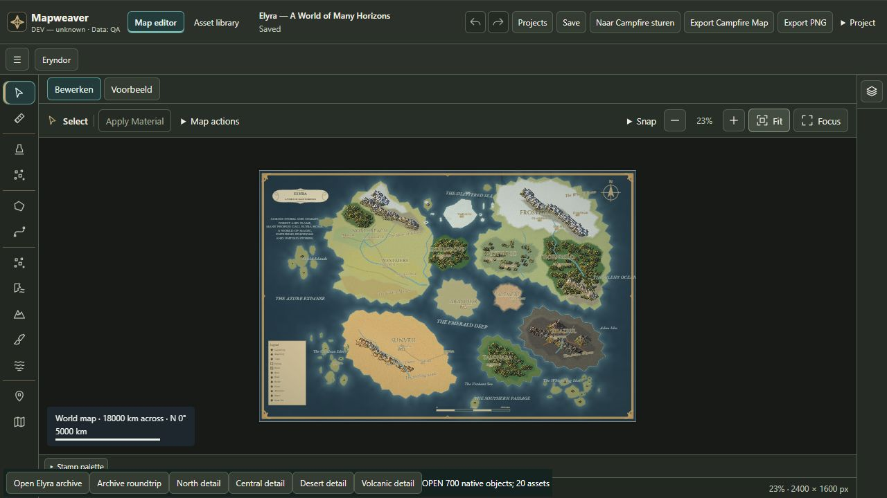
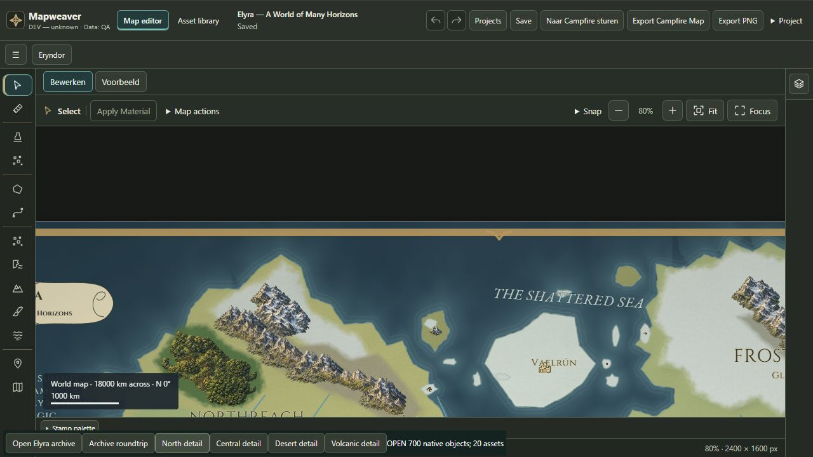
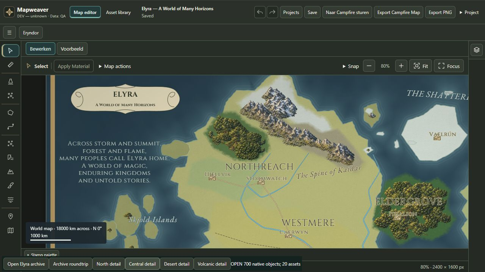
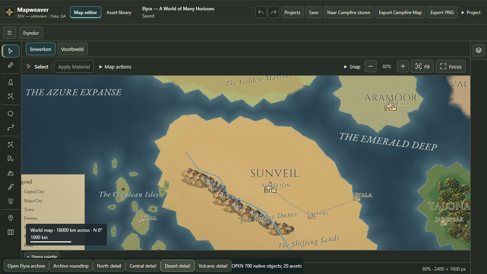
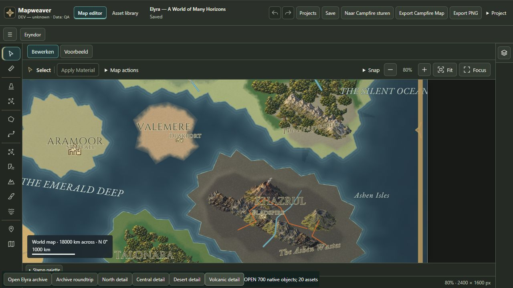

Elyra — referentie versus native Mapweaver
Technische bewerkbaarheid/export bewezen. Visuele referentiekwaliteit niet bereikt. Dit is een rapportpagina, geen samengestelde kaartexport.
Originele gebruikersreferentie — 1536×1024 Native Mapweaver UI-export — 2400×1600
Native Mapweaver UI-export — 2400×1600
Editor en details

Noordelijk ijs en gebergte
Centraal bos en rivier
Zuidelijke woestijn
Oostelijke vulkanen